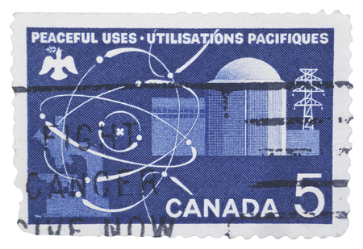

element: a pure substance that cannot be broken down into simpler chemical substances by any physical or chemical means; consists of only one kind of atom
ion: an entity with a net positive or net negative electrical charge due to the loss or gain of one or more electrons
ionic compound: a pure substance formed from the bond between a metal and a non-metal
molecular compound: a pure substance formed by covalently bonded non-metal atoms
kinetic molecular theory: the idea that the smallest entities of a substance—atoms, ions, or molecules—are in continuous motion, colliding with each other and objects in their path
Throughout Module 1 you will be examining fundamental science and chemistry concepts. You will examine
science and technology in society
elements and ions
ionic compounds
molecular compounds
chemical change and the kinetic molecular theory
The question addressed in Module 1 is as follows:
What are the roles of modelling, evidence, and theory when explaining and understanding the structure, bonding, and properties of ionic and molecular compounds?

© 2007 Jupiterimages Corporation